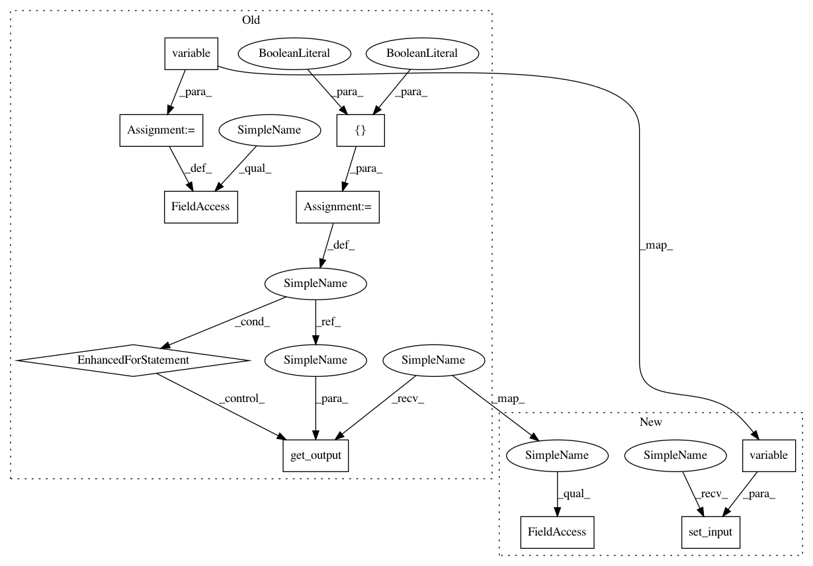

efe5916109e220a429a2cff110edb952d747466f,tests/keras/layers/test_convolutional.py,,test_upsampling_2d,#,351
Before Change
size=(length_row, length_col),
input_shape=input.shape[1:],
dim_ordering=dim_ordering)
layer.input = K.variable(input)
for train in [True, False]:
out = K.eval(layer.get_output(train))
if dim_ordering == "th":
assert out.shape[2] == length_row * input_nb_row
assert out.shape[3] == length_col * input_nb_col
else: // tf
assert out.shape[1] == length_row * input_nb_row
assert out.shape[2] == length_col * input_nb_col
// compare with numpy
if dim_ordering == "th":
expected_out = np.repeat(input, length_row, axis=2)
expected_out = np.repeat(expected_out, length_col, axis=3)
else: // tf
expected_out = np.repeat(input, length_row, axis=1)
expected_out = np.repeat(expected_out, length_col, axis=2)
assert_allclose(out, expected_out)
layer.get_config()
@pytest.mark.skipif(K._BACKEND != "theano", reason="Requires Theano backend")
After Change
layer = convolutional.UpSampling2D(
size=(length_row, length_col),
dim_ordering=dim_ordering)
layer.set_input(K.variable(input), shape=input.shape)
out = K.eval(layer.output)
if dim_ordering == "th":
assert out.shape[2] == length_row * input_nb_row
assert out.shape[3] == length_col * input_nb_col
In pattern: SUPERPATTERN
Frequency: 4
Non-data size: 10
Instances
Project Name: keras-team/keras
Commit Name: efe5916109e220a429a2cff110edb952d747466f
Time: 2016-04-01
Author: francois.chollet@gmail.com
File Name: tests/keras/layers/test_convolutional.py
Class Name:
Method Name: test_upsampling_2d
Project Name: keras-team/keras
Commit Name: efe5916109e220a429a2cff110edb952d747466f
Time: 2016-04-01
Author: francois.chollet@gmail.com
File Name: tests/keras/layers/test_convolutional.py
Class Name:
Method Name: test_zero_padding_2d
Project Name: keras-team/keras
Commit Name: efe5916109e220a429a2cff110edb952d747466f
Time: 2016-04-01
Author: francois.chollet@gmail.com
File Name: tests/keras/layers/test_convolutional.py
Class Name:
Method Name: test_upsampling_3d
Project Name: keras-team/keras
Commit Name: efe5916109e220a429a2cff110edb952d747466f
Time: 2016-04-01
Author: francois.chollet@gmail.com
File Name: tests/keras/layers/test_convolutional.py
Class Name:
Method Name: test_zero_padding_3d
Project Name: keras-team/keras
Commit Name: efe5916109e220a429a2cff110edb952d747466f
Time: 2016-04-01
Author: francois.chollet@gmail.com
File Name: tests/keras/layers/test_convolutional.py
Class Name:
Method Name: test_upsampling_2d